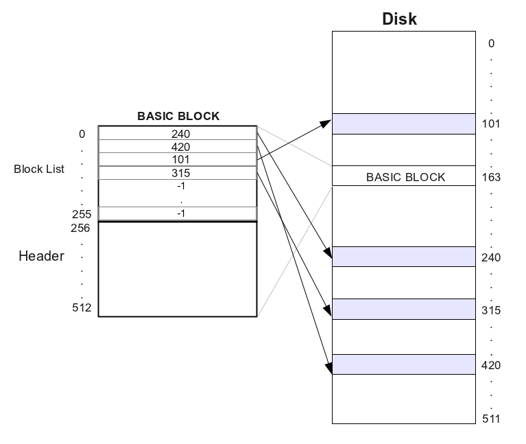

Introduction
XFS or Experimental File System is a file system architecture designed for XOS (Experimental Operating System).
XFS is a simple filesystem which has no directory structure.
XFS spans the entire disk in XSM (Experimental String Machine).
The disk consists of a linear sequence of 512 blocks.
The basic unit of disk in XSM is a block.
The size of the block is equal to that of page in memory (512 words).
The total capacity of the disk is 512 * 512 = 262144 words.
Any particular block in the disk is addressed by the corresponding number in the sequence 0 to 511 known as the block number.
Disk Organization
The disk is organized by the file system as shown below.
| Block No | Contents | # of blocks |
| 0 | OS Startup Code | 1 |
| 1 - 2 | Exception Handler | 2 |
| 3 - 4 | Timer Interrupt Routine | 2 |
| 5 - 6 | Interrupt 1 Routine | 2 |
| 7 - 8 | Interrupt 2 Routine | 2 |
| 9 - 10 | Interrupt 3 Routine | 2 |
| 11 - 12 | Interrupt 4 Routine | 2 |
| 13 - 14 | Interrupt 5 Routine | 2 |
| 15 - 16 | Interrupt 6 Routine | 2 |
| 17 - 18 | Interrupt 7 Routine | 2 |
| 19 | File Allocation Table (FAT) | 1 |
| 20 | Disk Free List | 1 |
| 21 - 23 | INIT Code | 3 |
| 24 - 447 | User Blocks | 424 |
| 448 - 511 | Swap Area | 64 |
-
OS Startup Code : Block 0 is the location of operating system code required during machine boot.
-
Exception and Interrupt Handler : Blocks from 1 - 18 are intended for Interrupt Routines for interrupt and exception handling which is done by the Operating System.
-
FAT or File Allocation table contains details about the files stored on the disk.
-
Disk Free List has 512 entries, one entry for each block in the disk, indicating whether it is used or unused.
-
INIT Code It has the code for INIT process, which is the first user program run by the OS after startup.
-
User Blocks. Blocks from 24 to 447 are used to store user data files and user programs.
-
Swap Area The file system also provides a swap area for the operating system to implement demand paging. Swap Area is reserved exclusively for use by the operating system.
File
A file is a collection of blocks identified by a name.
Every file in the disk has a Basic Block and several Data Blocks.
They are defined as follows:
Data Blocks : These blocks contain the actual data of a file.
Basic Block : It consists of information about the data in a file.
The structure of the basic block is given below.
| Index | 0--255 | 256--511 |
| Content | Block List | Header |
- Block List : It contains block addresses of all data blocks in the file.
- The block list consists of 256 entries.
- Each entry is of size one word.
- The value contained in an entry of the block list gives the block number of the corresponding data block in the disk.
All invalid entries are marked with -1.
- Header The header contains the meta information relating to the file. The header fields is 256 words long. It can be used to store details like permissions, ownership etc related to a file, similar to inode in Linux and UNIX operating systems. However XOS does not use the header field.

Example
- Consider the example illustrated by figure 3. From the figure, we infer the following.
- The zeroth data block of the file resides in the disk in block number 240
- The first data block of the file resides in the disk in block number 420. The second data block of the file resides in the disk in block number 101. The third data block of the file resides in the disk in block number 315
- There are no more data blocks for the file. So rest of the entries of the basic block are marked as -1.
File Types
There are two types of files in the XSM architecture. They are:
Data files
These files contain data or information that is used by the programs. They can occupy a maximum of 257 blocks (1 basic block + maximum 256 data blocks). Data files have an extension .dat in the filename.
Executable files
These contain programs that the user wishes to run on the machine. They occupy 4 blocks (1 basic block + 3 data blocks) of the disk. Executable files have an extension .xsm in the filename.
File Allocation Table (FAT)
File allocation table (FAT) is a table that has an entry for each file present in the disk. FAT of the filesystem consists of 64 entries. Thus there can be a maximum of 64 files.
- Total size of the FAT is thus 512 words, which occupies 1 block.
- It is a disk data structure and occupies block number 19 on the disk.
Structure of FAT
The structure of a FAT entry is shown below:
| 0 | 1 | 2 | 3 - 7 |
|---|
| File Name | File Size | Block# of Basic Block | ... |
|
The FAT entry consists of
1. File Name : It is an identification of a file. It can be of maxi-
mum 15 characters (and thus requires 1 word). Typical file names are
student.dat, calc.xsm.
2. File Size : It indicates the number of words required for the data
blocks of the file. The number of data blocks of the file can vary from
0 to 256, and so the maximum file size is 131072 words (256 × 512).
It occupies one word in the FAT entry.
3. Block number of basic block : It contains the block number where
the basic block of a file resides in the disk. It occupies one word in the
FAT entry.
For an invalid FAT entry, the value for basic block is stored as -1.
Disk Free List
The Disk Free List is a data structure used for keeping tracking of unused blocks in the disk.
- The Free List of the disk consists of 512 entries. Each entry is of size
one word.
- The size of the free list is thus 1 block or 512 words.
- It is present in blocks 20 of the disk. Refer Disk Organization.
- For each block in the disk there is an entry in the Disk Free List which
contains a value of either 0 or 1 indicating whether the corresponding
block in the disk is free or used respectively. Each entry in the Disk
Free List is of size one word.
- Blocks 0 to 20 are system reserved and are marked as 1 in the Disk
Free List so that they cannot be used for saving user files. The file
system also ensures that user files are not stored on the Swap Area.